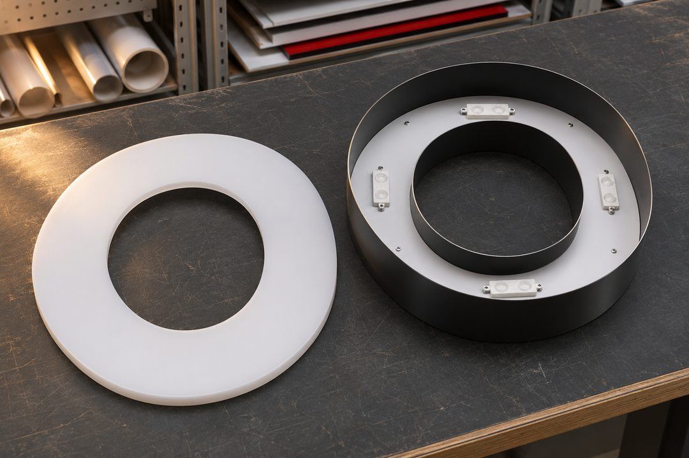

Ремонт подсветки
Одна буква погасла, часть короба мерцает или яркость стала неравномерной. После диагностики уточним причину и предложим объём работ.
- Оценка состояния подсветки
- Расчёт замены неисправных компонентов
Борисоглебск · Поворино · Грибановский
Погасла часть букв, выцвело изображение или треснула лицевая панель? Опишите, что изменилось. Предложим вариант ремонта и укажем, какие детали можно сохранить после осмотра.
Если вывеска световая, для первого обсуждения пригодятся два снимка — днём и после включения.

Выберите симптом. Так менеджер поймёт, что нужно оценить для вашего объекта.
Снимите весь фасад с земли. Нужны место вывески, высота относительно входа и пространство под ней.
Покажите видимый дефект с доступной точки. Если речь о подсветке, добавьте снимок работающей вывески вечером, когда это возможно.
Укажите город, этаж, часы работы точки и возможность подойти или подъехать к фасаду. Согласуем, как передать фотографии.
Сначала уточним симптомы по описанию и фотографиям. Если причину снаружи определить сложно, согласуем осмотр на месте.
Фото и файлы можно передать при обсуждении заказа.
В расчёте разделим диагностику по необходимости, материалы, доступ к конструкции, демонтаж и обратный монтаж. Окончательный состав согласуем после оценки.
Обсудить мой вариантДа, начнём с этого элемента. Уточним его состояние и возможность подобрать подходящую деталь и оттенок подсветки.
Это зависит от состояния каркаса и новой надписи. Если меняется язык, посмотрите варианты обновления текста.
Берём заявки от юридических лиц в Борисоглебске, Поворино и Грибановском. В коммерческом предложении укажем согласованный состав работ, в том числе выезд и монтаж, если они нужны.
Укажите город и оставьте телефон. Менеджер уточнит задачу и подготовит расчёт для вашей организации. Если нужно коммерческое предложение, укажите это в заявке.